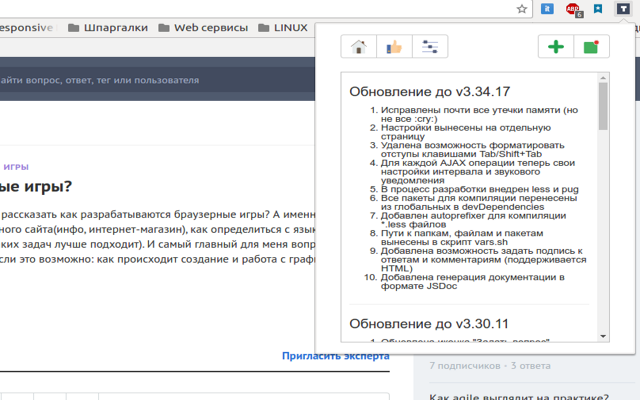
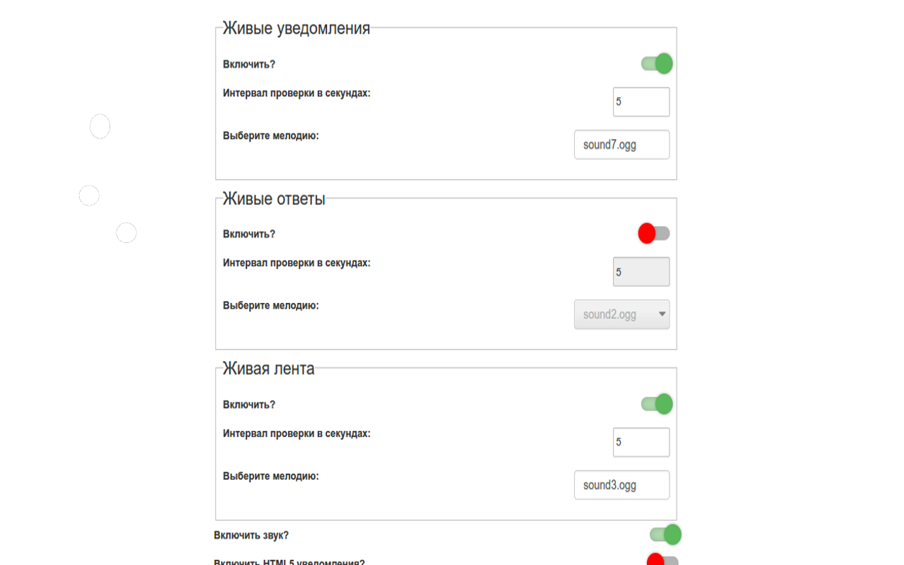
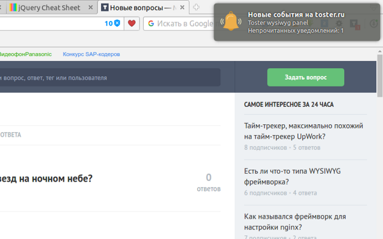
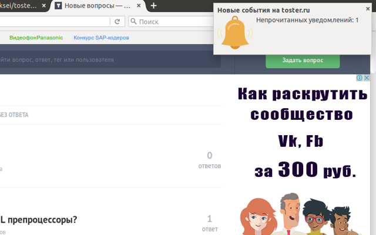

Toster Tools v3.37.18
Описание
Расширение для браузеров Google Chrome, Opera и Firefox

Что умеет расширение:
- Живое обновление ответов и комментариев к вопросу
- Живое обновление ленты вопросов
- Живое обновление непрочитанных уведомлений
- Возможность отправки ответа или комментария нажатием комбинации Ctrl+Enter
- Возможность задать подпись в HTML формате дял ответов и комментариев
- Возможность скрывать правый сайдбар сайта
- Возможность скрывать верхнюю панель со ссылками ТМ
- Возможность менять отображение шрифта в поле ввода ответа и комментария
- Возможность менять отображение шрифта примеров исходного кода
- Быстрый переход на страницу добавления нового вопроса и на страницу трекера
- HTML5 Notification уведомление, клик по которому откроет страницу со списком уведомлений
- Вывод количества непрочитанных уведомлений на иконке расширения
- Звуковое уведомление для каждого события. Выбрать мелодию можно в настройках.
- Комбинация Alt+T открывает popup с настройками
- Возможность включать и отключать все опции в настройках




Примечание
Если расширение недоступно по приведенной ссылке, то используйте установку из zip-архива (Opera, Chrome) или из xpi (Firefox), как описано здесь